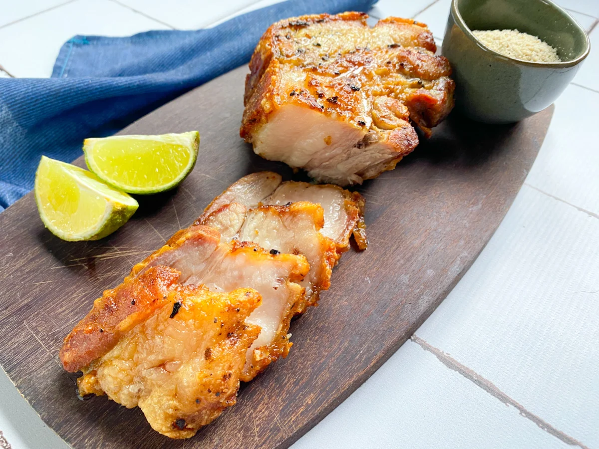
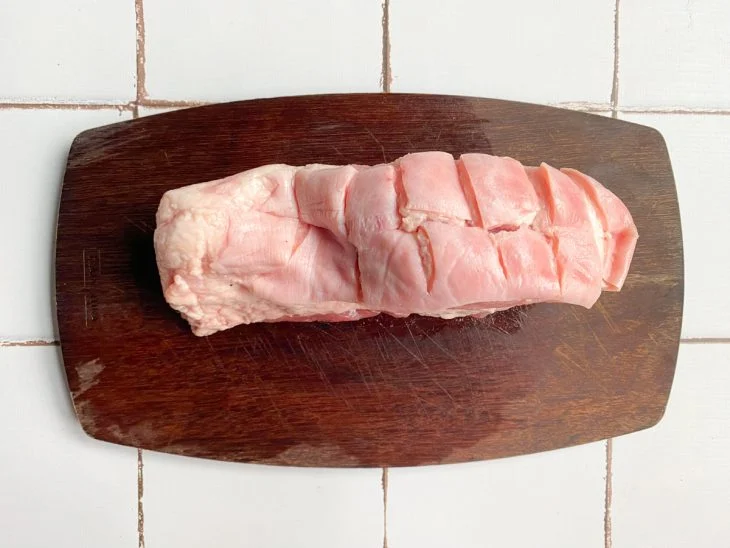
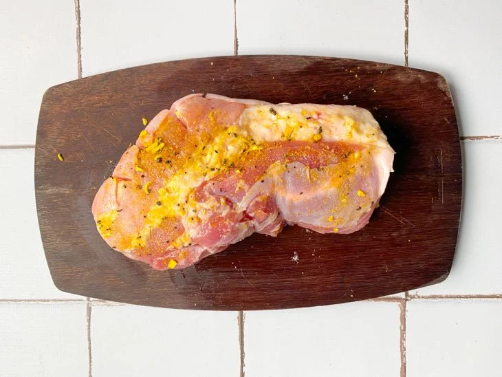
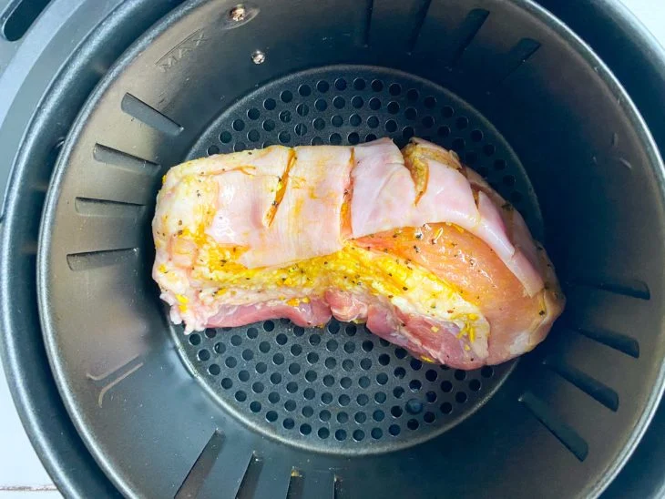
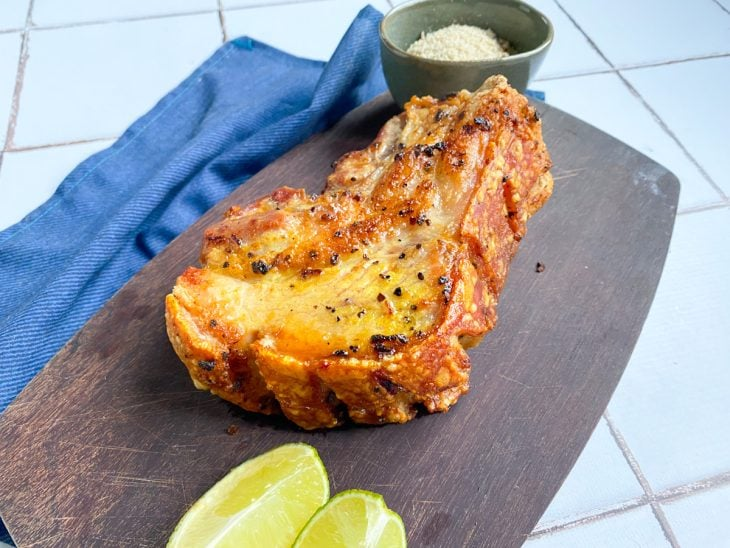

Panceta na airfryer

Ingredientes
- 1 kg de panceta (barriga de porco)
- 2 colheres de sopa de azeite (ou a gosto)
- 1 colher de chá de sal (ou a gosto)
- 1 colher de chá de lemon pepper (ou a gosto)
- 1 dose de cachaça (50 ml)
Modo de preparo

Reúna os ingredientes para fazer a panceta na airfryer, fácil e prática;- 
Em uma tábua, faça cortes de cerca de 1 cm somente no couro da panceta. Evite cortar até a carne para manter a suculência da carne;
- 
Utilize o papel toalha para secar o couro. Vire a panceta para o outro lado e espalhe azeite na carne. Tempere com sal e lemon pepper. Espalhe na carne;
- 
Vire a panceta novamente, tempere com sal no couro. Ajeite o pedaço com a carne virada para baixo na airfryer. Antes de fechar, coloque a cachaça por cima do couro e espalhe. Leve para a airfryer a 180ºC por cerca de 1 hora;
- 
Após esse tempo, retire a panceta e corte as fatias. Depois, fatie em tirinhas. Sirva a panceta na airfryer com limão e aproveite. Bom apetite!